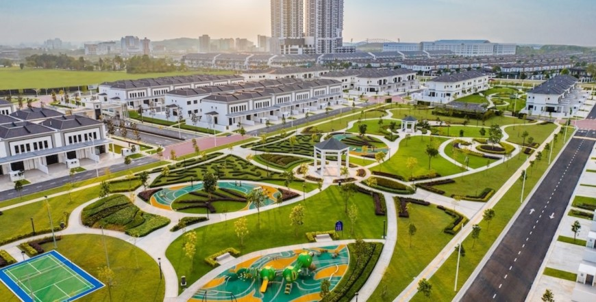

Short answer: For a Semi-D you plan to live in, Sunway Iskandar is appealing if you value the integrated township, school access and the way a specific Emerald Residence home is laid out. Eco Botanic is appealing if you prefer an established landscaped community and freehold ownership. If money is not the deciding factor, I would choose the home that better fits my family's daily routine — not the township with the louder marketing.
Buyers often ask me whether they should choose a Sunway Iskandar Semi-D or an Eco Botanic Semi-D. Both belong on a shortlist in Iskandar Puteri, but they offer different ownership and living experiences. This comparison is written from a property agent's perspective: what I would explain to a buyer before arranging viewings, including reasons not to choose either one.
Sunway Iskandar vs Eco Botanic Semi-D at a glance
| Buying question | Sunway Emerald Residence | Eco Botanic Semi-D |
|---|---|---|
| Developer / township | Sunway Property / Sunway City Iskandar Puteri | EcoWorld / Eco Botanic |
| Tenure | Leasehold; Sunway's published APDL states a 129-year lease expiring 31 August 2141 | Freehold for the semi-D phases identified in EcoWorld's published disclosures; verify the specific title |
| Lifestyle emphasis | Integrated township and day-to-day amenities | Established residential community and landscaped surroundings |
| School consideration | Sunway International School is part of the township ecosystem | Check the schools relevant to your household and the actual daily school-run route |
| What to check closely | Unit layout, orientation, lease terms, management and how you use the township | Phase, home condition, security arrangements, land use and upkeep |
| Best fit | Someone who values the wider Sunway ecosystem | Someone who prioritises freehold and an established green neighbourhood |
Important: This table compares Sunway Emerald Residence with Eco Botanic Semi-D homes. Do not assume that every property across the wider Sunway township, or every Eco Botanic phase, has identical title conditions, facilities or management arrangements.
Why would I choose Sunway Iskandar for my own Semi-D?
1. I want the township facilities to be part of normal life
Sunway City Iskandar Puteri is planned as an integrated community. For a household that often uses its retail, recreation and education facilities, that ecosystem can be a practical reason to live there. The question is not simply whether the amenities exist; it is whether your family will actually use them.
2. The home layout suits the way my family lives
Sunway describes Emerald Residence as a gated-and-guarded hilltop, lakeside development with semi-detached home options. Individual plans and lot sizes vary. I would compare the kitchen, downstairs rooms, stairs, garden, parking and usable outdoor space before deciding whether the home works better than a resale Semi-D elsewhere.
3. Sunway International School is relevant to my household
Having an international school within the wider township can matter when it is the school your children attend. If it is not part of your family's plan, this advantage may be less important than your work route, home layout or preferred neighbourhood atmosphere. See the Sunway City schools guide for more context.
What would make me hesitate about Sunway?
The most obvious trade-off is leasehold ownership at Emerald Residence. Sunway Property's published APDL specifies a lease of 129 years, expiring on 31 August 2141. I would make sure the buyer understands the actual remaining tenure and title restrictions at purchase, rather than treating the township's brand as a substitute for checking documents. I would also inspect each individual unit's privacy, facing, upkeep and community costs.
Why would I choose Eco Botanic for my own Semi-D?
1. Freehold ownership matters to me
EcoWorld's official Eco Botanic disclosures describe freehold tenure for its relevant Semi-D phases. For buyers who prefer freehold, especially for long-term family ownership, that is a clear difference to weigh. It does not guarantee a higher resale price or easier sale; the specific house, condition, asking price and buyer demand still matter.
2. I prefer an established community with greenery
Eco Botanic is known for its landscaped setting and mix of residential and everyday amenities. If you enjoy the neighbourhood atmosphere and the routes you take for groceries, school and family outings, it can be an attractive place to settle. I would visit the actual precinct, not judge the whole township by a single promotional picture.

3. I want to evaluate mature resale homes
Established phases can give buyers something tangible to inspect: the surrounding homes, road use, nearby activity and the condition of the actual unit. For a resale house I would also budget for repairs, renovations and upkeep, instead of comparing headline asking prices alone.
What would make me hesitate about Eco Botanic?
Freehold does not automatically make every house the right fit. Some units may need work, some layouts may not match your needs, and particular streets may feel different at busy and quiet times. The community or phase rules, maintenance arrangements and exact title should be checked before an offer.
If money were no issue, which Semi-D would I buy?
My preference would depend on how I plan to live. If I used the Sunway township facilities regularly, wanted its school ecosystem and loved a particular Emerald Residence layout, I would seriously consider Sunway even though it is leasehold. If I preferred the neighbourhood feel of Eco Botanic, valued freehold ownership and found a well-maintained Semi-D in the right precinct, I could confidently choose Eco Botanic instead.
There is no honest universal winner. A premium home is still the wrong purchase if your family does not enjoy living in it.
How I would help a buyer compare the two
Before suggesting either place, I would ask what the home is for: full-time own stay, part-time family visits or future retirement. Then we can shortlist real units and compare them on the same criteria rather than comparing different sizes or conditions as if they were equal.
- Use of space: Bedroom arrangement, stairs, living area, parking, garden and practical layout.
- Everyday routes: Your actual school, work, shopping and family routine, rather than a generic driving-time claim.
- Ownership and costs: Tenure and restrictions, applicable community fees, taxes, insurance, repairs and renovation needs.
- At-the-door experience: Privacy, sunlight, road activity, maintenance, security and how you feel on the street.
If you are comparing a new home with a resale one, also read the Iskandar Puteri landed property guide and who should buy landed in Iskandar Puteri.
Frequently asked questions
Is Sunway Emerald Residence leasehold?
Yes. Sunway Property’s published project information identifies Sunway Emerald Residence as leasehold. Its APDL states a 129-year lease expiring on 31 August 2141. Check the title and documents for the specific unit before buying.
Is Eco Botanic freehold?
EcoWorld’s official project disclosures identify its Eco Botanic semi-detached home phases as freehold. Check the individual phase and title for the home you are considering.
Which is better for a family buying a Semi-D for own stay?
Choose according to your daily routine. Sunway Emerald Residence deserves a look if the integrated township, school access and its particular layout fit your household. Eco Botanic is worth prioritising if you prefer an established community, landscaped surroundings and freehold ownership. Neither is automatically better.
If budget is not an issue, should I simply buy a freehold Semi-D?
Not necessarily. Freehold is a meaningful ownership preference, but it does not replace checking design, condition, privacy, management, household routines and whether the home feels right when viewed.
What should I compare during viewings?
Walk through both layouts and inspect usable land, natural light, parking, stairs, noise, neighbour proximity, maintenance obligations and practical routes to the places your household visits regularly. For a resale unit, confirm defects and title details.
My view as a property agent
Both developments can be sensible for the right family. I would never tell someone to buy Sunway only because it is Sunway, or Eco Botanic only because it is freehold. I would start by understanding how you live, identify a few comparable Semi-D units, then let the homes and the daily-life trade-offs speak for themselves.
For broader area research, explore the Iskandar Puteri hub or the existing Sunway City, Horizon Hills and Eco Botanic comparison. To see how I help buyers shortlist properties, visit Sam Tee's property advisory page.